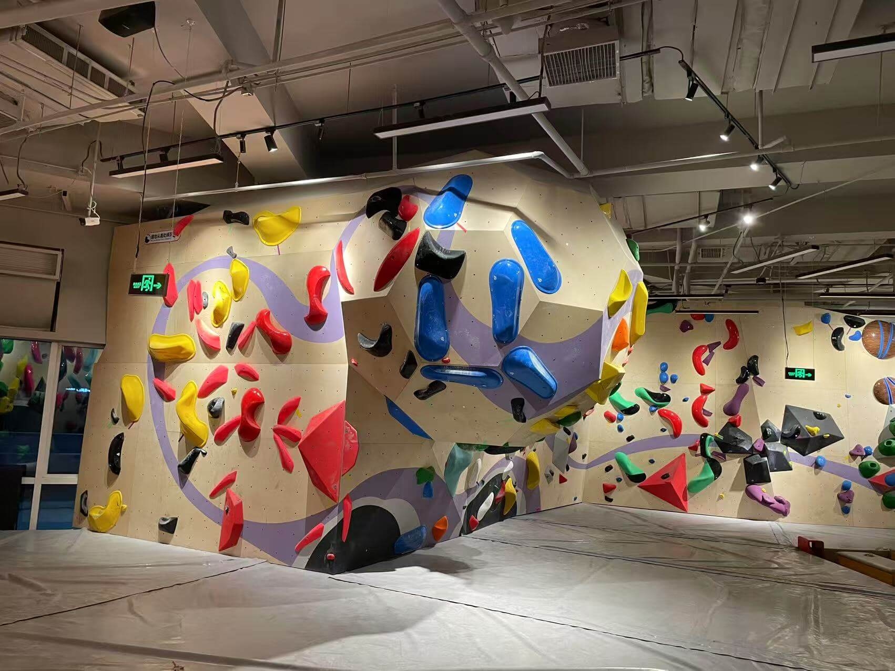

It's wild how a random "hey-let's-go" turned into one of the most empowering things I've done lately.
I tried bouldering for the first time today. That's the one where you climb short walls—no ropes, no harness—just your hands, your feet, your grit… and a big cushy mat waiting underneath.
Climbing is strangely addictive. I wasn't prepared for how *much* of it happens in your mind. My arms and legs followed orders, but the real war was in my head:
"That hold's too far."
"You'll fall."
"Maybe just stop here—it's safe."

But I saw girls beside me—strong, fierce, relentless. They didn't know me, but their silent encouragement echoed louder than words. Falling, laughing, trying again. That energy is contagious.
Before my second try, a female coach said something that stuck: "The first thing you need to learn is how to fall—once you know that, you won't be afraid anymore." It flipped a switch in my brain. The fear of falling is what holds us back, not the actual fall.
Later, I chatted with a girl who climbs like a pro. She told me she still has to do a lot of mental prep before a tough climb. "Sometimes I fail just because I didn't truly believe I could do it," she said. That landed deep. It's not just about strength—it's about belief.
I made it to the top of my first "V0" route (yes, I now know what a "V0" is!). That first success, however small, tasted better than any to-do list checkbox. And guess what—I already have my "next mission" picked out for tomorrow. A slightly tougher one. A bit higher. A bit scarier. That's the point.
I think I've found a new sport that feels right for me. There's something symbolic here—because isn't life like that too? Even if we're not climbing literal walls, we hesitate because we fear failure. Especially as women, we're often taught to be cautious. No wonder the gym was filled with girls, all pushing themselves beyond their fears.
Notes from a Bouldering Beginner
- Wear tight shoes. Seriously. The rental ones hurt, but apparently, they're supposed to.
- Use your legs more than your arms. I learned this the hard way when my arms turned into soggy noodles after 20 minutes.
- Rest between climbs. Watching others and studying their moves is part of the fun (and the learning).
- It's okay to fall. The floor is padded, your ego isn't. Let it go.
What I loved most wasn't just climbing—it was *figuring myself out* mid-air. That moment of "I can't" turning into "wait… maybe I can?" That's magic.
Can't wait to go back tomorrow.
Let's see how high I can go 🧗♀️✨